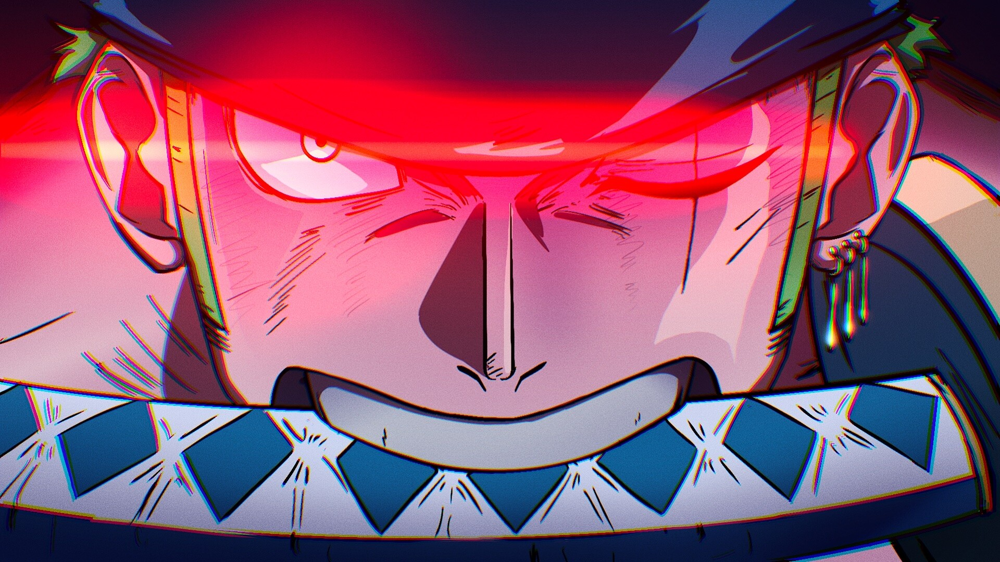
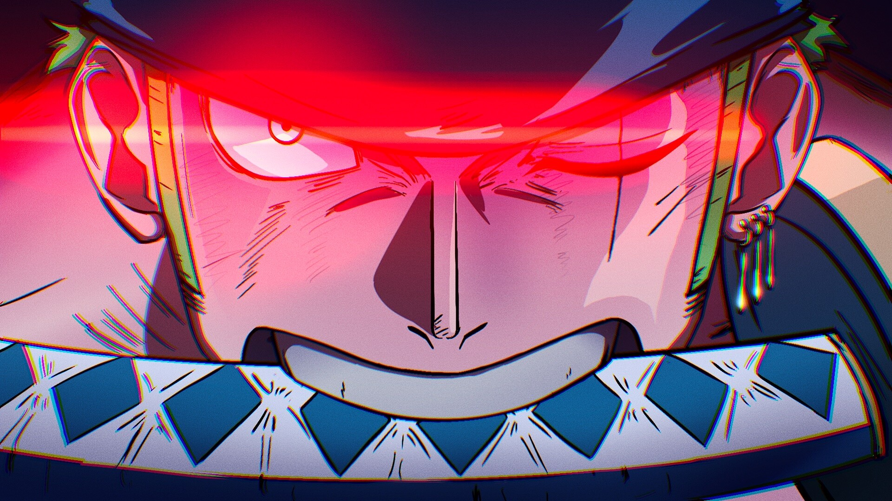

One Piece
One Piece segue Monkey D. Luffy e sua tripulação de piratas enquanto eles buscam o tesouro lendário, o "One Piece", para tornar Luffy o Rei dos Piratas. Em sua jornada, enfrentam inimigos, fazem amigos e exploram mistérios em um mundo cheio de aventuras.
Monkey D. Luffy
Capitão da tripulação. Luffy tem o sonho de se tornar o Rei dos Piratas. Ele possui a habilidade de esticar seu corpo como borracha graças à Fruta do Diabo Gomu Gomu no Mi.
Roronoa Zoro
Espadachim da tripulação. Zoro é um mestre do estilo de luta com três espadas (Santoryu) e sonha em se tornar o maior espadachim do mundo.
Sanji
Cozinheiro da tripulação. Sanji é um mestre das artes marciais que luta usando apenas suas pernas. Ele sonha em encontrar o All Blue, um mar lendário onde todos os peixes do mundo se encontram.
Nami
Navegadora da tripulação. Nami é especializada em cartografia e navegação. Ela adora tesouros e é excelente em manipular o clima com seu Clima-Tact.
Nico Robin
Arqueóloga da tripulação. Robin comeu a Fruta do Diabo Hana Hana no Mi, que lhe permite criar múltiplas réplicas de suas partes do corpo em qualquer superfície. Seu sonho é descobrir a verdadeira história do mundo, conhecida como o Século Perdido.
Tony Tony Chopper
Médico da tripulação. Chopper é uma rena que comeu a Hito Hito no Mi, permitindo que ele se transformasse em um híbrido humano-rena. Ele é um médico talentoso e sonha em curar qualquer doença.
Brook
Músico da tripulação. Brook é um esqueleto vivo que comeu a Yomi Yomi no Mi, que lhe deu uma segunda vida após a morte. Ele é um espadachim habilidoso e sonha em se reunir com seu antigo amigo, Laboon, uma baleia.
Usopp
Atirador da tripulação. Usopp é um grande contador de histórias e um inventor talentoso. Ele sonha em se tornar um grande guerreiro do mar, assim como seu pai.
Franky
Carpinteiro da tripulação. Franky é um ciborgue que construiu o navio da tripulação, o Thousand Sunny. Ele sonha em construir o melhor navio que já navegou nos mares.
Jinbe
Timoneiro da tripulação. Jinbe é um homem-peixe e um mestre das artes marciais aquáticas. Ele já foi membro dos Piratas do Sol e agora sonha em ver uma paz duradoura entre humanos e homens-peixe.